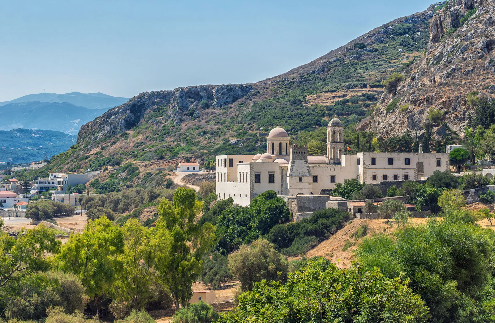

Crete is the largest and most populous of the Greek islands, the 88th largest island in the world and the fifth largest island in the Mediterranean Sea, after Sicily, Sardinia, Cyprus, and Corsica. It bounds the southern border of the Aegean Sea, with the Sea of Crete (or North Cretan Sea) to the north and the Libyan Sea (or South Cretan Sea) to the south.
Crete and a number of islands and islets that surround it constitute the Region of Crete (Greek: Περιφέρεια Κρήτης), which is the southernmost of the 13 top-level administrative units of Greece, and the fifth most populous of Greece's regions. Its capital and largest city is Heraklion, on the north shore of the island. As of 2020, the region had a population of 636,504.[4] The Dodecanese are located to the northeast of Crete, while the Cyclades are situated to the north, separated by the Sea of Crete. The Peloponnese is to the region's northwest.
The island is mostly mountainous, and its character is defined by a high mountain range crossing from west to east. It includes Crete's highest point, Mount Ida, and the range of the White Mountains (Lefka Ori) with 30 summits above 2,000 metres (6,600 ft) in altitude and the Samaria Gorge, a World Biosphere Reserve. Crete forms a significant part of the economy and cultural heritage of Greece, while retaining its own local cultural traits (such as its own poetry and music). The Nikos Kazantzakis airport at Heraklion and the Daskalogiannis airport at Chania serve international travelers. The palace of Knossos, a Bronze Age settlement and ancient Minoan city, is also located in Heraklion.
